Contents
1. Getting started
- Install Admin Toolkit for Salesforce from the Chrome Web Store.
- Open any Salesforce tab and sign in as usual. The toolkit reuses the session you are already signed in with.
- Click the extension icon. The popup opens with the Apps tab — the main entry point to Metadata Admin, Force Sheet, Org Review, and Object Schema — plus metadata search across the org.
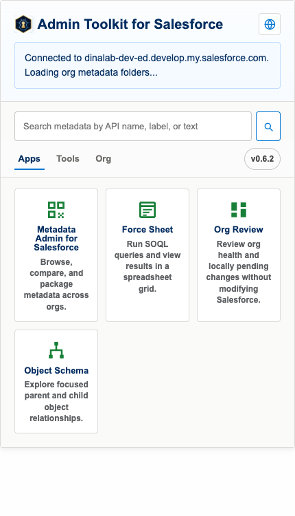
2. Metadata Admin for Salesforce
Browse the org's metadata in a source-style tree, search the loaded workspace by label, name, API name, object, or snippet, edit files locally, track changes, build package.xml selections, and deploy or discard your edits.
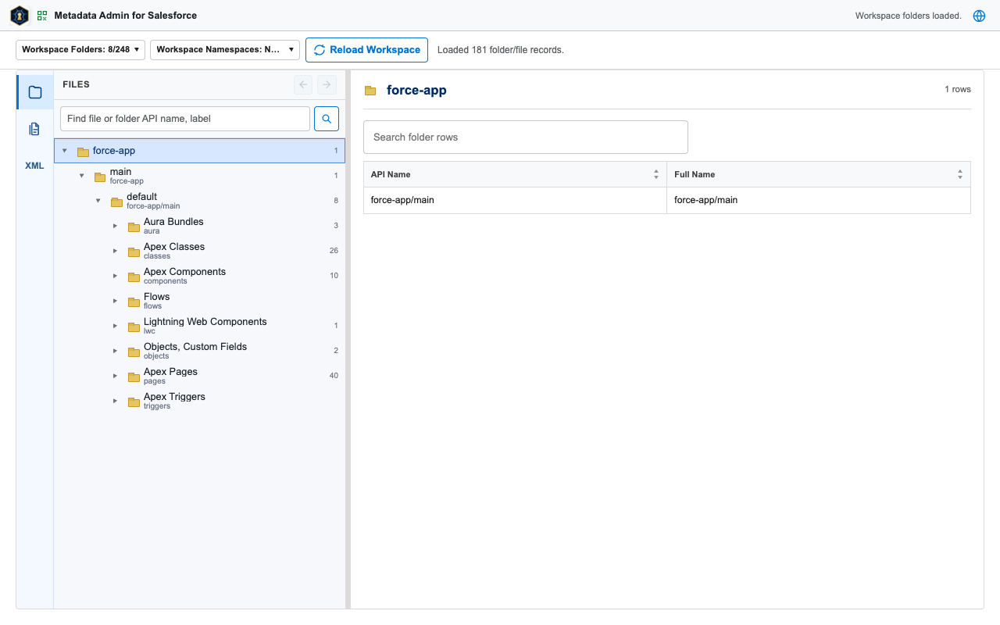
3. Force Sheet
Type a SOQL query and run it with the Run button or Ctrl+Enter. Results stream into a multi-tab spreadsheet grid with pagination. You can also open Salesforce reports and list views, import CSV/XLSX data, and start Salesforce CRUD workflows from grid selections — every write asks for confirmation first.
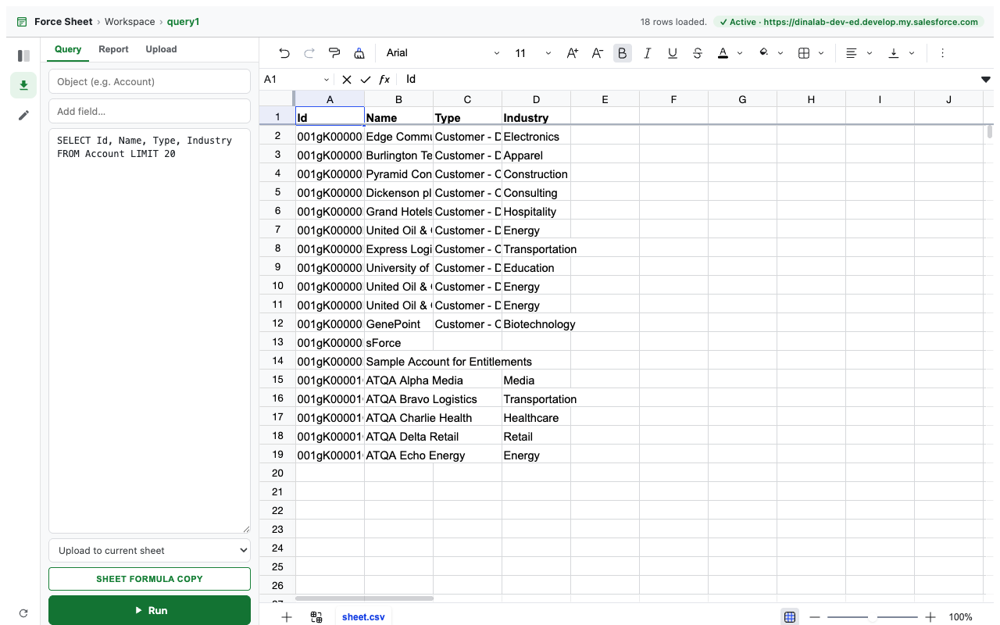
The workspace panel keeps your files: the Objects tree lists objects with list views, Reports opens org reports, and Workspace holds your auto-saved spreadsheet files organized in folders, exportable as CSV or Excel.
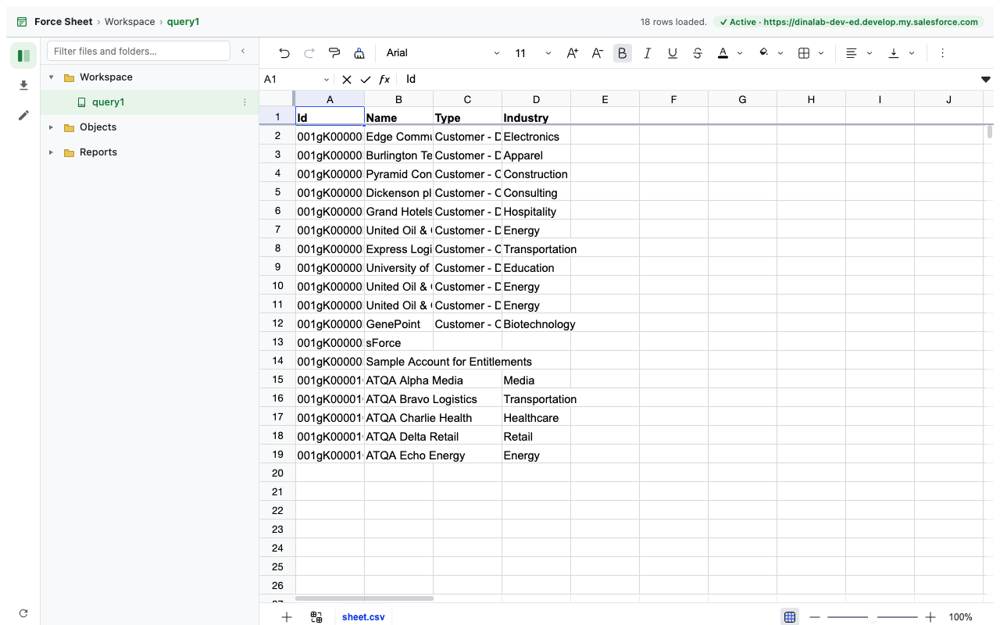
4. Org Review
Org Review starts automatically when opened and runs a read-only assessment of org health, recent activity, features, data model, security, coverage, limits, and automation. Each section carries evidence and remediation guidance, and the report exports as PDF, Markdown, summary JSON, or evidence JSON.
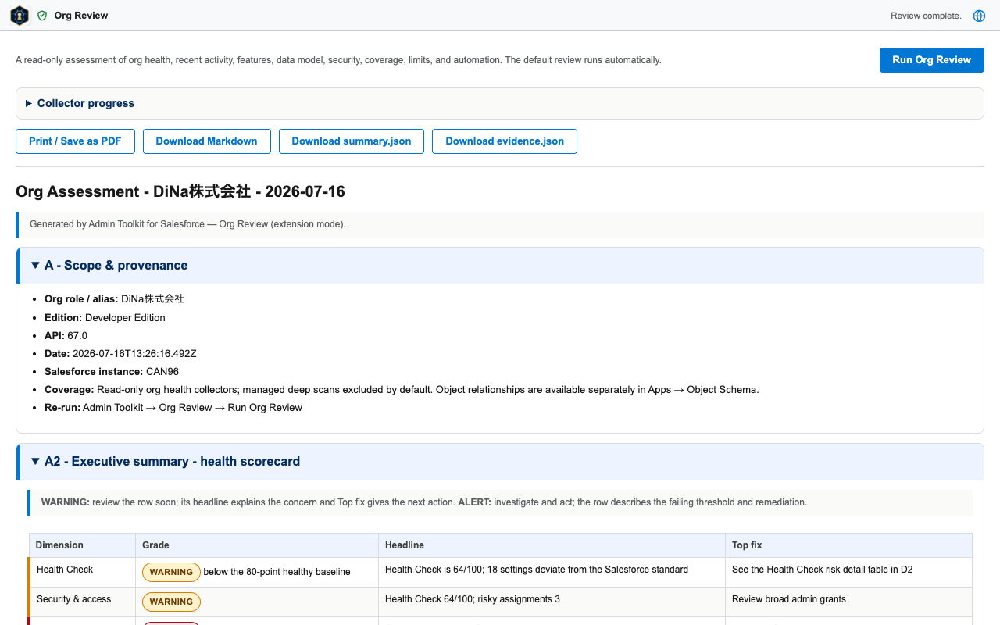
5. Object Schema
Pick an object name (with suggestions), choose parent and child depth, and press Build Schema View. The interactive map supports search with a highlighted path from the root, zoom, horizontal and vertical layouts, and a visible-objects filter. Packaged Objects and Show all standard objects control which objects are pickable, and your packaged-namespace choice is remembered per org.
Below the map, the Fields spreadsheet lists every field of every selectable object. Filter it to one object, use native header filters, or run a global search — matching cells are highlighted. The sheet supports CSV download and full-screen mode.
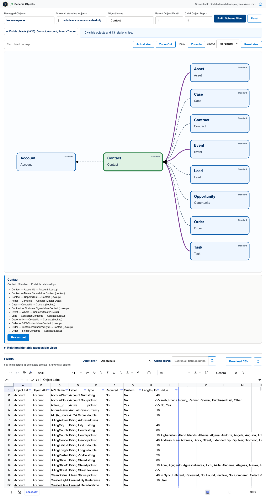
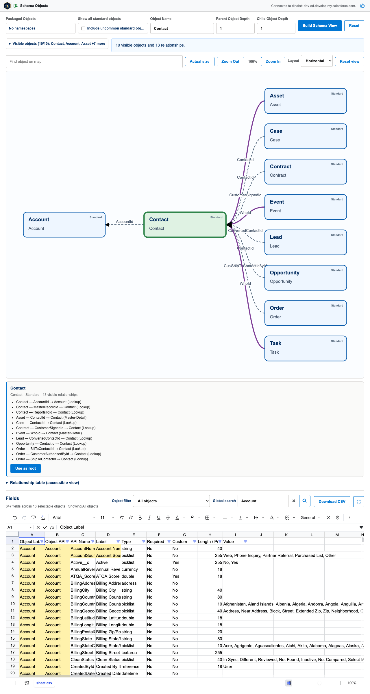
6. Document Folders
Browse Salesforce document libraries and folders, preview supported files, and use the tree checkboxes to select folders and files — folder selection is recursive and keeps duplicate document occurrences independent. Review everything in the Selected Items panel and download it as a ZIP that preserves folder paths. Downloads are limited to 500 files and 250 MB of known content, and an in-progress ZIP can be canceled.
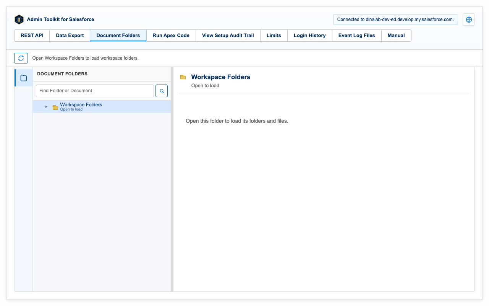
7. REST Explorer
Send Salesforce REST API requests against the connected org and inspect the JSON responses. Requests run only when you send them, using your existing Salesforce session.
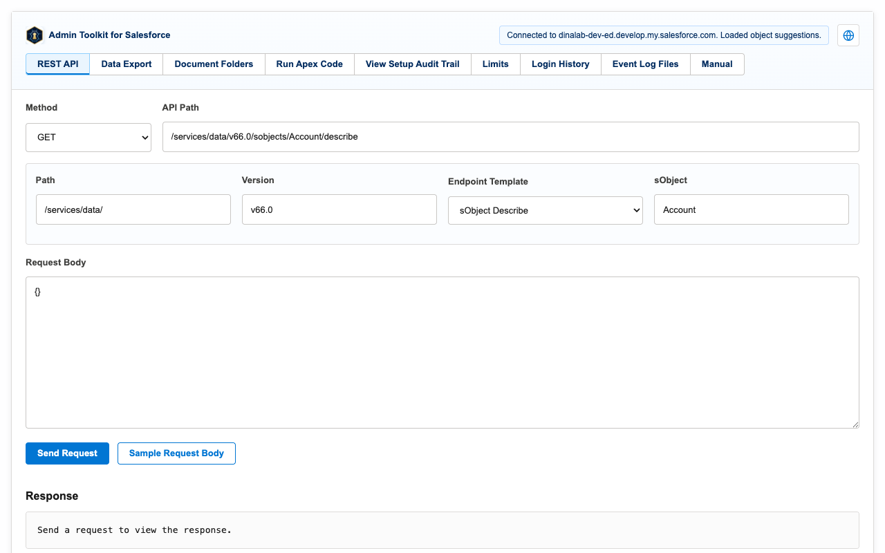
8. Run Apex
Execute anonymous Apex and review the compile result, execution status, and debug output.
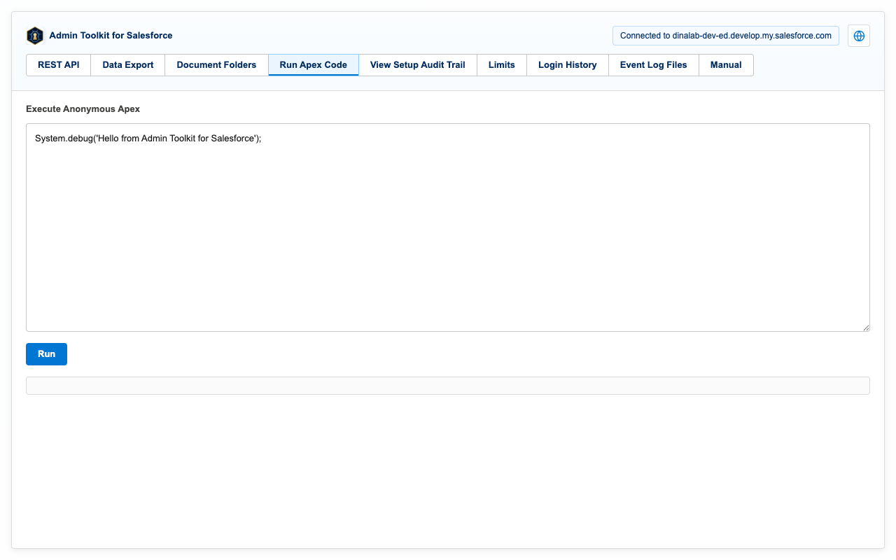
9. Data Export
Run SOQL, SOSL, and GraphQL queries or report exports and download the results as CSV or JSON.
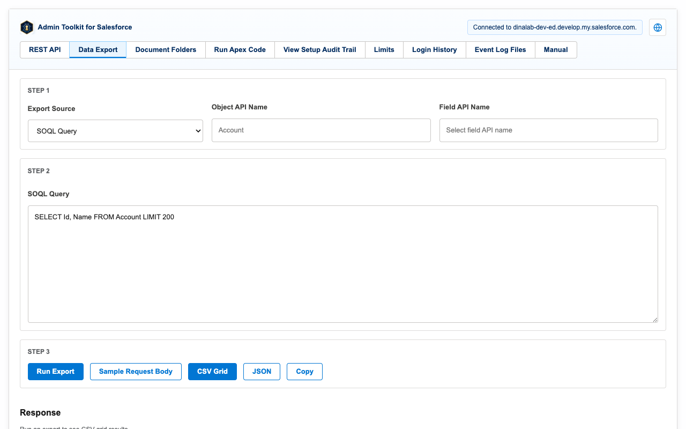
10. API usage & monitoring
Inspect the org's latest API usage and limits. Companion monitoring pages cover the setup audit trail, login history, event log files, and org and user summaries.
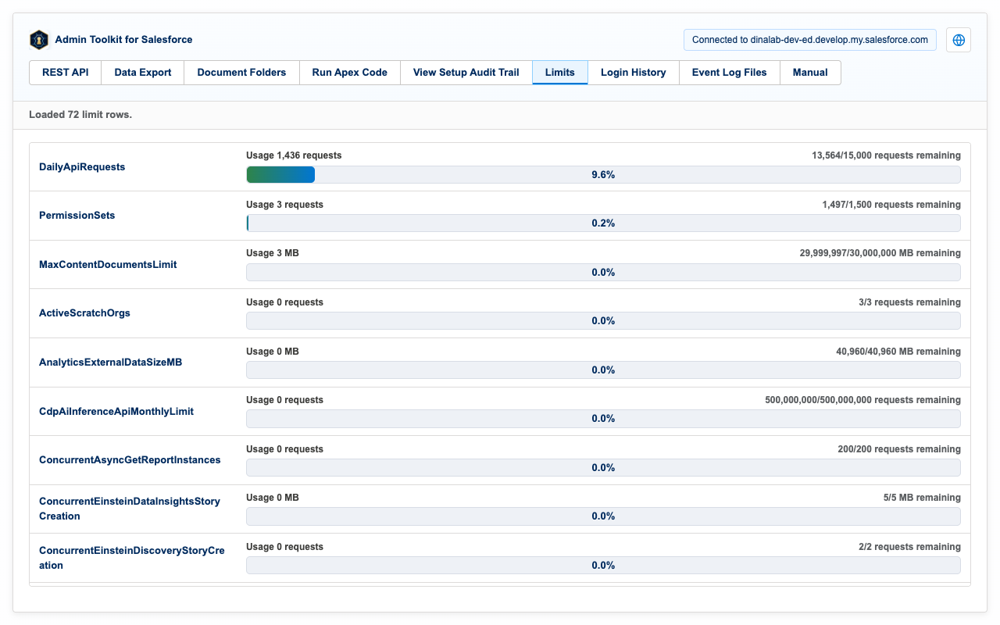
11. Built-in manual (EN/JP)
The extension ships with a built-in manual in English and Japanese. Every toolkit page also has a language picker in its header, so the whole UI can switch between English and 日本語 at any time.